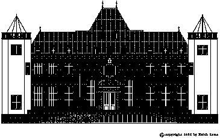
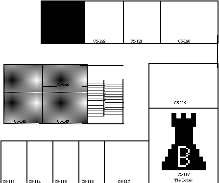

We want to compare different approaches to the modeling of problem-solving processes in knowledge-based systems and the influences of the models on the knowledge acquisition activities. To this purpose we give a short description of a sample problem concerned with office assignment in a research environment. Research groups who participate in Sisyphus-I are requested to describe how this problem can be solved and represented in their approach. To ease comparison and to allow for a well-founded discussion, we propose a structure for the reports. Please adhere to it.
In this second round of Sisyphus-I, we decided to use almost the same problem statement, that is the office-assignment task. It has been changed a little bit, by adding a second set of slightly changed data (see Section 2.5). We assume that this will give the reader an even better chance to understand the functioning of your approach. Additionally, this introduces the issue of brittleness.We would like to know how a model reacts to unusual cases.
Furthermore, we require traces of the problem-solving processes of your system for both problem statements. This means that this year we want descriptions of operational problem solvers.
These formatting instructions resulted from the Sisyphus-I discussions at EKAW91. Please adhere to them. Remember that your Sisyphus-I article is a contribution to an ongoing discussion, and not a full scientific paper.
| Section | Contents | Pages |
| 1 | Tool Description and generic structures | 5 |
| 2 | Protocol Interpretation, assumptions, decisions taken about unclear points | 1 |
| 3 | Solution description, instantiated generic structures, traces for both problem statements. | 9 |
| 4 | Knowledge acquisition approach, i.e., links between the knowledge structures of the tool and actions or utterances of the protocol; justifications and design decisions; and questions arising from the modeling process that one would address to Sigi. | 5 |
To refer to the protocol elements in the papers, one should use the numbers on the left of the action descriptions (e.g. Action 1), respectively those on the left of the comments (e.g., Comment 1a).

Figure 1: The château of HNE. YQT resides on the first floor
The members of the research group YQT of the HNE laboratory are moved to a new floor of their château. Due to severe cuts in funding they only get a very limited number of offices. It will be quite a problem to cram them all in. To complicate matters even further some will have to share an office. After several vain attempts each ending as nightmares that would have impressed Freddy, the management of HNE is desperate. Sisyphus-I is their last hope. HNE implores the Sisyphus-I teams to provide knowledgeable systems that are up to the task.

Figure 2: The part of the floor-plan of the château that we will consider in our sample application
It is important that the systems' ways to solve the problem follow the shining example of the wizard Siggi D., the only one who ever managed to solve the problem. The system developers should be aware of the fact that YQT's members are used to be pampered. They all have their personal preferences and professional peculiarities that should better be observed, as the dungeons of the BABYLON tower are deep and lonely.
Not all members of YQT can profit from this new office space in the château, about half of the group stay in their old offices. Those that are concerned by the new assignment are:
| Werner L. Role = Researcher Project = RESPECT Smoker = No Hacker = True Works-with= Angi W., Marc M. | Jürgen L. Role = Researcher Project = EULISP Smoker = No Hacker = True Works-with= Harry C., Thomas D. |
| Marc M. Role = Researcher Project = KRITON Smoker = No Hacker = True Works-with= Angi W., Werner L. | Angi W. Role = Researcher Project = RESPECT Smoker = No Hacker = No Works-with = Marc M., Werner L. |
| Andy L. Role = Researcher Project = TUTOR2000 Smoker = Yes Hacker = No Works-with = | Michael T. Role = Researcher Project = BABYLON Product Smoker = No Hacker = Yes Works-with = Hans W. |
| Harry C. Role = Researcher Project = EULISP Smoker = No Hacker = Yes Works-with = Jürgen L., Thomas D. | Uwe T. Role = Researcher Project = Autonomous Systems Smoker = Yes Hacker = Yes Works-with = |
| Thomas D. Role = Researcher Project = EULISP Smoker = No Hacker = No Works-with = Jürgen L., Harry B. | Monika X. Role = Secretary Smoker = No Hacker = No Works-with = Thomas D., Ulrike U., Eva I. |
| Ulrike U. Role = secretary Smoker = No Hacker = No Works-with = Thomas D., Monika X., Eva I. | Hans W. Role = Researcher Project = BABYLON Product Smoker = Yes Hacker = No Works-with = Michael T. |
| Eva I. Role = Manager Smoker = No Hacker = No Works-with = Thomas D., Ulrike U., Monika X. | Joachim I. Role = Researcher Project = ASERTI Smoker = No Hacker = No Works-with = |
| Katharina N. Role = Researcher Project = MLT Smoker = Yes Hacker = Yes Works-with = |
Within the subset of members of YQT we have the following organizational structure:
Thomas D. is the head of the group YQT; Eva I. manages YQT; Monika X. and Ulrike U. are the secretaries; Werner L. and Angi W. work together in the RESPECT project; Harry B., Jürgen L. and Thomas D. work in the EULISP project; Michael M. and Hans W. work in the Babylon Product project; Hans W. is the head of this large project, Marc M., Uwe T. and Andy L. pursue individual projects; Katharina N. and Joachim I. are heads of larger projects that are not considered in this problem.
C5-123, C5-122, C5-121, C5-120, C5-119 and C5-117 are large rooms that can host two researchers. Large rooms can be assigned to heads of groups too. C5-113, C5-114, C5-115 and C5-116 are single rooms.
| The words of the wizard Siggi D. | Comments, questions and annotations | ||
| 1 | Put Thomas D. into office C5117 | 1a 1b | The head of group needs a central office, so that he/she is as close to all the members of the group as possible. This should be a large office.
This assignment is defined first, as the location of the office of the head of group restricts the possibilities of the subsequent assignments. |
| 2 | Monika X. and Ulrike U. into office C5119 | 2a | The secretaries' office should be located close to the office of the head of group. Both secretaries should work together in one large office. This assignment is executed as soon as possible, as its possible choices are extremely constrained. |
| 3 | Eva I. into C5-116 | 3a 3b | The manager must have maximum access to the head of group and to the secretariat. At the same time he/she should have a centrally located office. A small office will do.
This is the earliest point where this decision can be taken. |
| 4 | Joachim I. into C5-115 | 4a | The heads of large projects should be close to the head of group and the secretariat. There really is no reason for the sequence of the assignments of Joachim, Hans and Katharina. |
| 5 | Hans W. into C5-114 | 5a | The heads of large projects should be close to the head of group and the secretariat. |
| 6 | Katharina N. into C5-113 | 6a | The heads of large projects should be close to the head of group and the secretariat. |
| 7 | Andy K. and Uwe T. into C5120 | 7a | Both smoke. To avoid conflicts with non-smokers they share an office. Neither of them is eligible for a single office. This is the first twin-room assignment, as the smoker/non-smoker conflict is a severe one. |
| 8 | Werner L. and Jürgen L into C5123 | 8a 8b | They are both implementing systems, both non-smokers. They do not work in the same project, but they work on related subjects. Members of the same project should not share offices. Sharing with members of other projects enhances synergy effects within the research group.
There really are no criteria of the sequence of these twin room assignments. |
| 9 | Marc M. and Angi W. into C5122 | 9a | Marc is implementing systems, Angi isn't. This should not be a problem. Putting them together would ensure good cooperation between the RESPECT and the KRITON projects. |
| 10 | Harry C. and Michael T. into C5121 | 10a | They are both implementing systems. Harry develops object systems, Michael uses them. This creates synergy. |
Our wizard Siggi D. seems to pursue a general strategy of assigning the head of group and the staff personnel first, followed by the heads of large projects, who through their seniority are eligible for single offices (some are more equal then others). The offices of the head of group and the staff should be close to each other. Heads of projects should, if possible be allocated offices close to the head of group's.
Twin offices are assigned to the members of research projects, under the consideration that synergy among projects is boosted. This means that researchers that work in same projects are, if possible not sharing an office. Coworkers that work on related subjects can share an office. It is important not to put smokers and non-smokers together into twin offices.
The second problem statement reflects a a more recent situation at HNE. Katharina N. left, and Christian-I joined the group. Christian I. is just a researcher, he smokes, he works in MLT, and he is a hacker. He is not a head of project.
The office situation stays the same. Again, all the members of the group must be assigned. Obviously, the situation has changed, and the system must show how it copes with this slightly modified data-set.
Remember that this second problem statement has been introduced to adress the issue of brittleness. We would like to see which general precautions your model takes, so that it can cope with borderline cases.
Problem statement prepared by Marc Linster and converted for web by Brian Gaines.